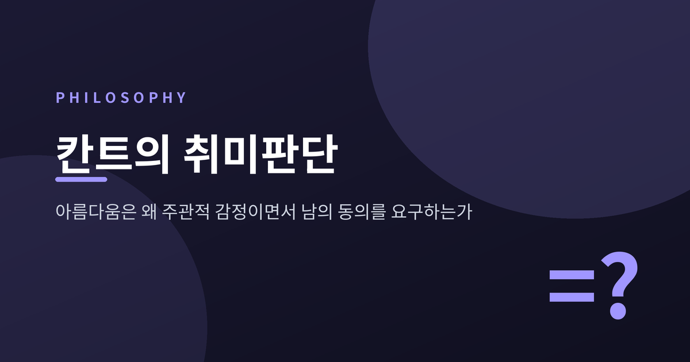
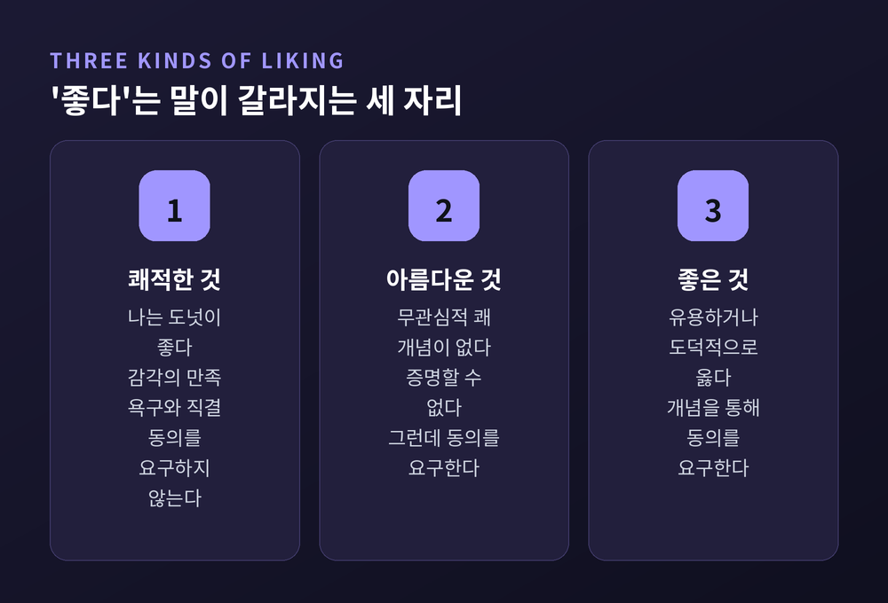
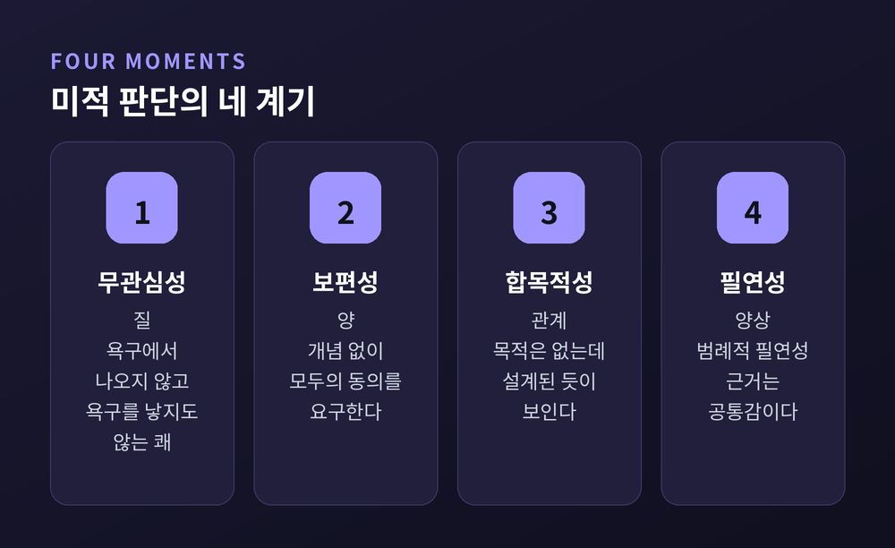
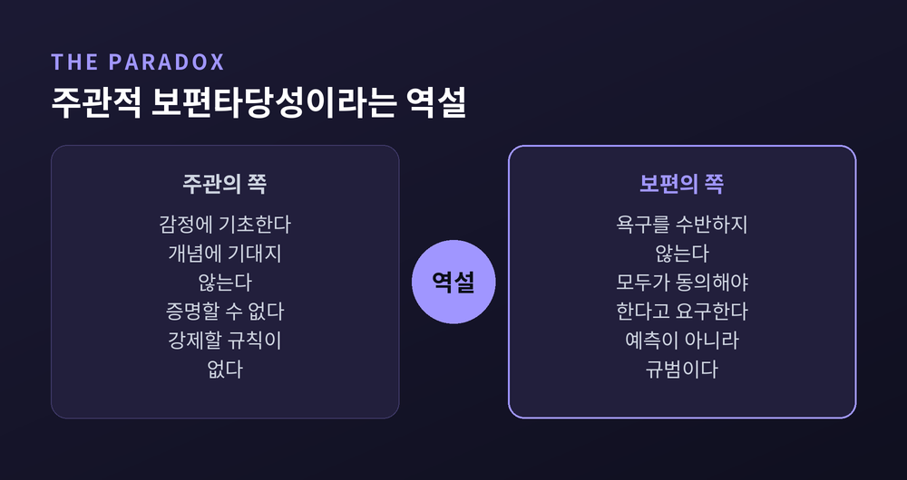
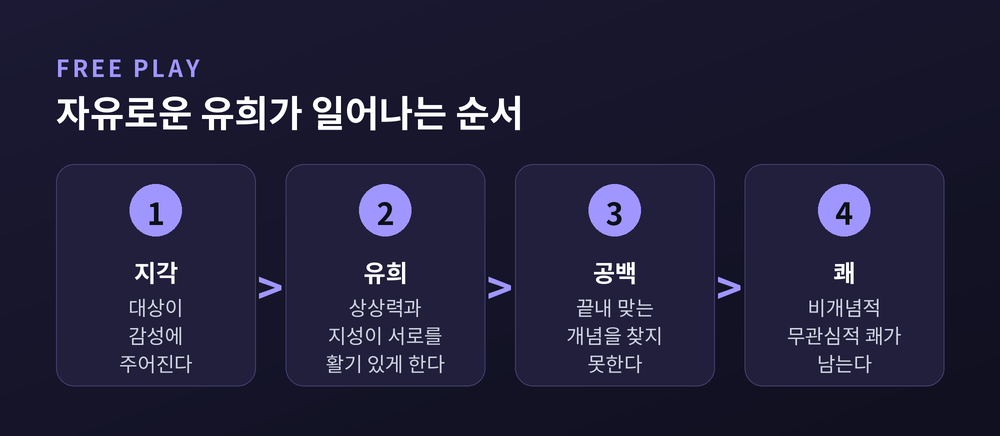
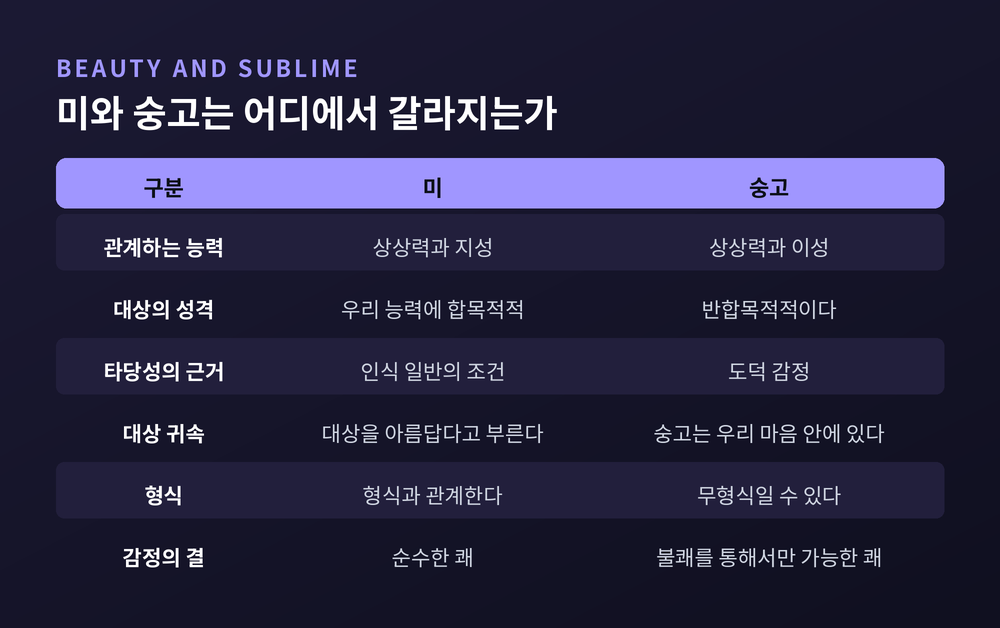
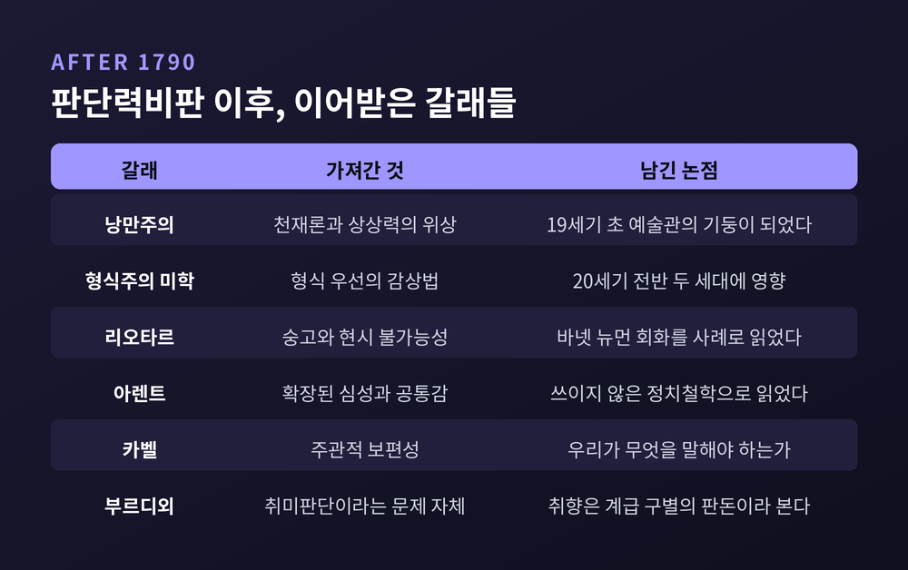

이번 글에서는 칸트의 취미판단을 정리해 보겠습니다. 『판단력비판』이 말하는 미적 판단의 네 계기와, 그 한복판에 놓인 '주관적 보편타당성'이라는 역설을 따라가 봅니다. 이후 미학에 남긴 자국과 현대의 반론까지 함께 다룹니다.
세 줄 요약
우리는 아름다움을 두고 흔히 이렇게 말합니다. "아름다움은 보는 사람 눈에 달렸다."
그런데 실제로 그렇게 행동하지는 않습니다.
영화가 끝나고 나오는 길에 친구와 언쟁을 벌입니다. 저 건물이 흉물인지 아닌지를 두고 도시 전체가 몇 년씩 싸웁니다. 그리고 그 논쟁이 무언가를 이룰 수 있다고 믿습니다. 의견이 갈리면 우리는 "어딘가에 오류가 있다"고 여기지, "일치했다면 그저 우연이었을 것"이라고 여기지 않습니다.
말과 행동이 어긋나 있습니다. 입으로는 순전히 주관적이라 하면서, 몸으로는 마치 미가 무게나 화학 조성처럼 대상에 붙은 성질인 양 굽니다.
칸트가 붙든 것이 정확히 이 어긋남입니다.

칸트는 1724년 쾨니히스베르크에서 태어나 1804년에 세상을 떠났습니다. 『순수이성비판』이 1781년(2판 1787년), 『실천이성비판』이 1788년, 그리고 『판단력비판』이 1790년입니다. 세 번째 비판서는 애초 그의 저술 계획에 없던 책이었습니다.
평가도 순탄하지 않았습니다. 낭만주의 시기의 열광이 지나간 뒤 20세기 초까지 이 책은 비교적 방치되었고, 노년의 산물이라며 낮춰 보는 시선도 있었습니다. 최근 수십 년에 와서야 칸트의 주요 저작으로 다시 읽히고 있습니다.
책의 핵심 개념은 '판단력'입니다. 칸트는 판단력을 특수한 것을 보편적인 것 아래에서 생각하는 능력으로 규정합니다.
여기서 두 갈래가 갈립니다.
미적 판단은 두 번째에 속합니다. 개념 없이 시작해서 개념 없이 끝나는 판단입니다. 칸트가 미학에 그토록 많은 지면을 쓴 이유가 여기 있습니다. 미는 취향의 문제이기 이전에 판단력이라는 능력이 자기 정체를 가장 선명하게 드러내는 자리였습니다.
칸트는 "저것은 아름답다"는 판단을 네 계기로 나눠 분석합니다. 순서는 『순수이성비판』의 범주표, 곧 질·양·관계·양상을 따릅니다.
첫째는 무관심성입니다.
미적 판단은 쾌의 감정에 기초합니다. 다만 그 쾌는 대상에 대한 욕구에서 나오지도 않고, 욕구를 낳지도 않습니다. 칸트가 말하는 '관심'은 실제 욕구·행위와의 연결, 나아가 대상이 실제로 존재하느냐에 대한 관심입니다. 순수한 미적 판단에서 그 대상의 실재 여부는 상관이 없습니다.
인과의 방향이 뒤집혀 있다는 점이 중요합니다. 쾌를 느꼈기 때문에 아름답다고 판단하는 것이 아닙니다. 아름답다고 판단했기 때문에 쾌가 따라옵니다.
이로써 셋이 갈라집니다. 도넛이 좋다고 말할 때의 쾌적한 것, 유용하거나 도덕적으로 옳다고 말할 때의 좋은 것, 그리고 어느 쪽에도 속하지 않는 아름다운 것입니다.
칸트는 여기서 한 걸음 더 나갑니다. 미적 판단은 대상의 형식—형태, 배열, 리듬—에만 관계하고 감각적 내용인 색이나 음색에는 관계하지 않는다고 봅니다. 감각적 내용은 쾌적함과, 따라서 관심과 깊이 얽히기 때문입니다. 근대 미학의 형식주의가 여기서 출발합니다.
동시에 가장 많이 두들겨 맞은 지점도 여기입니다. 니체와 프로이트는 예술이 언제나 의지와 얽혀 있다고 보았고, 마르크스주의는 문화적 생산물인 이상 예술은 어떤 의미로든 정치적이라고 보았으며, 표현주의는 예술을 정서적 반응의 문제로 보았습니다.
둘째는 개념 없는 보편성입니다.
어떤 것을 아름답다고 판단할 때, 나는 그것을 보는 모든 사람이 나처럼 판단해야 한다고 여깁니다. 나의 쾌를 그들도 느껴야 한다고 여깁니다.
문제는 그 요구의 근거입니다.
"이것은 초록색이다"가 모두의 동의를 요구할 수 있는 이유는 분명합니다. 대상이 '초록'이라는 개념 아래 들어가기 때문입니다. 그런데 미적 판단에는 그런 포섭이 없습니다. 그래서 증명할 수도 없습니다. 누군가에게 이것을 아름답다고 판단하라고 강제할 규칙은 존재하지 않습니다.
칸트는 더 강하게 못 박습니다. "미는 대상의 개념이 아니다."
증거는 우리의 행동입니다. 우리는 취향 문제를 두고 논쟁하고, 그 논쟁에 결론이 있을 수 있다고 전제하고 행동합니다. 상대주의는 이 행동을 설명하지 못합니다.

셋째는 목적 없는 합목적성입니다. 네 계기 중 가장 낯선 표현입니다.
칸트에게 어떤 대상의 '목적'이란 그것을 만들 때 따른 개념입니다. 요리사 머릿속에 있던 야채수프의 개념 같은 것입니다. 어떤 대상이 '합목적적'이라는 것은, 그런 개념에 따라 만들어진 것처럼 보인다는 뜻입니다.
아름다운 대상은 마치 목적을 가진 듯이 우리에게 작용합니다. 그런데 아무리 찾아도 그 목적을 특정할 수 없습니다.
확정적 목적은 둘로 나뉩니다. 무엇을 하도록 만들어졌는가라는 외적 목적은 유용성으로 평가되고, 어떠해야 하는가라는 내적 목적은 완전성으로 평가됩니다. 칸트는 미가 유용성도 완전성도 아니라고 봅니다. 그럼에도 합목적적입니다.
쾌가 생기는 이유도 여기서 나옵니다. 칸트에게 쾌란 목적의 달성, 적어도 합목적성의 인지에서 생기는 감정입니다. 미는 확정적 목적 없이 합목적성만으로 그 쾌를 만들어냅니다.
예술은 더 까다롭습니다. 작가가 어떤 정서를 표현하려 했다는 제작 의도가 분명히 있을 수 있습니다. 그러나 그 의도만으로 작품이 아름다워지지는 않습니다. 감상자는 그 배경을 참고할 수는 있어도, 미적 판단을 내리는 순간에는 그로부터 물러나야 합니다. 미의 목적은 우연히 모르는 것이 아니라 알 수 없는 것입니다.
넷째는 필연성입니다.
내가 어떤 것을 아름답다고 할 때, 나는 모두가 나와 같이 느낄 것이라고 예측하는 게 아닙니다. 모두가 나와 같이 느껴야 한다고 요구합니다. 예측이 아니라 규범입니다.
이 필연성도 개념이나 규칙에 기대지 않습니다. 칸트는 이를 범례적 필연성이라 부릅니다. 나의 판단이 어떤 규칙에서 연역된 게 아니라, 그 판단 자체가 모두가 어떻게 판단해야 하는지의 한 사례로 서 있다는 뜻입니다.
그 근거가 공통감입니다.
여기서 오해를 하나 걷어내야 합니다. 공통감은 "붐비는 식당은 예약해 두는 게 상식이지" 할 때의 상식이 아닙니다. 개념이 아니라 감정으로 판단하게 해 주는 주관적 원리를 뜻합니다.
칸트는 네 계기 전부가 이 공통감 안에 요약된다고까지 말합니다.
『판단력비판』 §40에는 공통감의 세 준칙이 나옵니다. 스스로 사유할 것. 다른 모든 사람의 입장에서 사유할 것. 언제나 일관되게 사유할 것. 두 번째가 확장된 사유입니다. 자신의 판단을 인간 이성 전체에 비추어 봄으로써, 사적인 조건에서 나온 것을 객관적인 것으로 착각하는 일을 피하는 능력입니다.

칸트의 규정들은 서로 반대편으로 잡아당깁니다.
한쪽만 보면 미적 판단은 쾌적함에 대한 판단과 다를 게 없습니다. 감정에 기초하고, 개념이 없고, 증명되지 않습니다. 다른 쪽만 보면 객관적 인식 판단처럼 보입니다. 욕구를 수반하지 않고, 모두의 동의를 규범적으로 요구합니다.
칸트는 18세기 미학의 두 진영 모두에 반대합니다. 흄과 허치슨, 버크의 경험주의 전통은 취미판단을 인지적 내용 없는 감정의 표현으로 보았습니다. 바움가르텐과 마이어의 합리주의 전통은 그것을 대상의 객관적 속성에 대한 인식으로 보았습니다. 칸트는 둘 다 아니라고 말합니다. 감정에 기초하면서 동시에 보편타당성을 주장한다는 것—이 고집이 칸트 미학의 가장 독특한 대목입니다.
그 가능성의 열쇠가 상상력과 지성의 자유로운 유희입니다.
평소 인식에서 상상력은 지성이 정한 규칙에 따라 감각의 잡다를 종합합니다. 그 결과가 "저것은 초록색이고 네모다" 같은 경험입니다. 규칙은 곧 대상에 적용되는 개념입니다.
미적 경험에서는 관계가 달라집니다. 상상력은 여전히 지성과 조화를 이루지만, 지성에 지배당하지 않습니다. 두 능력은 개념 아래 대상을 넣을 때 하는 일을 사실상 다 하면서도, 어떤 특정한 개념 아래로도 넣지 않습니다.
그래서 우리는 대상을 '초록'이나 '네모'로 지각하는 대신 비개념적인 마음 상태로, 곧 무관심적 쾌의 감정으로 응답합니다.
아름다운 것은 우리로 하여금 끝내 찾을 수 없는 개념을 계속 더듬게 만듭니다. 그런데도 그 경험은 불쾌하지 않습니다. 두 능력이 서로를 활기 있게 하며 사고와 감정의 연쇄를 이루기 때문입니다.
좋은 그림 앞에서 발이 묶이는 경험을 떠올려 보시면 좋겠습니다. 무언가 말할 것이 있는데 그 말이 끝내 완성되지 않고, 그런데도 자리를 뜨고 싶지 않은 상태. 칸트가 가리킨 것이 그것입니다.
칸트는 이 자유로운 유희가 인식 일반의 주관적 조건을 드러낸다고 논증합니다. 우리는 자신의 인식에 대해 모두의 동의를 요구할 자격이 있습니다. 그렇다면 그 인식을 가능케 하는 주관적 조건에 대해서도 동의를 요구할 수 있어야 합니다. 상상력과 지성은 모든 인간에게 같은 방식으로 전제되어 있기 때문입니다.
논증은 우아합니다. 그러나 곧바로 딜레마에 걸립니다.
자유로운 유희가 모든 지각 경험에 관여하는가, 아닌가.
관여한다면 모든 대상이 아름답게 지각되어야 합니다. 주석가들이 칸트의 "모든 것이 아름답다" 문제라고 부르는 귀결입니다. 관여하지 않는다면, 초록·네모에 대한 동의 요구에서 자유로운 유희에 대한 동의 요구가 따라 나오지 않습니다. 핵심 추론이 끊깁니다.
대응은 갈립니다. 앨리슨은 연역이 개별 판단마다의 동의를 보장하려는 게 아니라 그런 요구가 일반적으로 정당할 수 있음만 보이려 한 것이라고 읽습니다. 세이빌과 치그넬은 그 정도로는 부족하며 개별 사례마다의 자격이 필요하다고 반박합니다. 그레이식과 긴스보그처럼 아예 첫 번째 뿔을 붙잡고 "칸트에게는 실제로 모든 대상이 정당하게 아름답다고 판단될 수 있다"고 읽는 쪽도 있습니다. 미어보테와 가이어는 이 딜레마가 칸트의 보편타당성 주장에 치명적이라고 봅니다.
칸트 자신도 여기저기 매듭을 남겼습니다. 「취미의 이율배반」에서는 취미판단이 개념을 쓰기는 하되 규정되지 않은 개념을 쓴다고 말합니다. 앞서 "미는 대상의 개념이 아니다"라고 한 것을 스스로 되무르는 듯한 대목입니다.
아직 완결된 이론은 아닙니다. 그 점은 인정하고 읽어야 합니다.

칸트는 미와 나란히 숭고를 다룹니다. 둘은 닮았으면서도 구조가 다릅니다.
숭고는 둘로 나뉩니다. 수학적 숭고는 크기가 상상력의 총괄 능력을 압도할 때 옵니다. 여기서 '절대적으로 큰 것'은 비교의 결과가 아닙니다. "몽블랑은 크다"는 다른 산들과 견준 말이지만, 절대적으로 큰 것은 견줄 대상이 없습니다. 칸트는 측정이 단위의 개수를 세는 일만이 아니라 단위 자체를 감성적으로 붙잡는 일에 기대고 있음을 지적하며, 인간 감성의 유한성 때문에 파악과 총괄에 절대적 한계가 생긴다고 논증합니다.
역학적 숭고는 자연이 우리에게 지배력을 갖지 못하는 위력으로 나타날 때 옵니다. 안전한 자리에 있음을 알기에 실제로 두려워하지 않으면서 자연을 두려운 것으로 경험할 때입니다. 칸트가 든 예는 깎아지른 절벽, 뇌운, 화산, 허리케인입니다. 그는 종교의 예도 듭니다. 신은 두려운 존재이지만 의로운 사람은 두려워하지 않습니다. 그것이 이성적 종교와 미신의 차이라고 칸트는 말합니다.
숭고의 감정은 순수한 쾌가 아닙니다. 자연의 위력 앞에서 우리는 물리적 무력함을 인정하지만, 동시에 자연으로부터 독립적으로 자신을 판정하는 능력을 발견합니다. 칸트는 이를 불쾌를 통해서만 가능한 쾌, 소극적 쾌라고 부르며, 그 마음의 운동을 같은 대상에 대한 반발과 이끌림이 빠르게 교체되는 진동에 비유합니다.

여기서 칸트 자신이 남긴 단서를 짚어야 공정합니다. 그는 숭고 이론이 자연의 합목적성에 대한 미적 판정의 "한낱 부록"이며, 자연에서의 숭고 개념이 미의 개념만큼 중요하지 않다고 적었습니다. 그럼에도 후대에 가장 널리 인용된 것은 오히려 숭고론이었습니다. 아바치처럼 숭고를 자연에 한정한 칸트의 제한을 옹호하는 쪽이 있고, 클루이스처럼 예술도 숭고할 수 있다고 보는 쪽이 있습니다. 리오타르는 바넷 뉴먼의 회화를 칸트적 숭고의 사례로 읽었습니다.
칸트는 예술의 문제를 감상이 아니라 제작의 쪽에서 봅니다.
역설이 하나 있습니다. 무엇이 아름다운지 결정하는 규칙은 명시될 수 없습니다. 그런데 칸트는 모든 예술이 규칙을 전제한다고도 말합니다. 이 둘을 어떻게 함께 놓을 수 있을까요.
칸트의 해법이 천재입니다. 천재란 자연이 예술에 규칙을 주는 능력입니다. 천재를 지닌 예술가는 아름답다고 판단될 만한 것을 만들어내지만, 스스로 규칙을 의식적으로 따르지 않으며, 자신이 그것을 어떻게 만들었는지 알지도 설명하지도 못합니다.
그래서 칸트는 뉴턴을 천재에서 제외합니다. 지적 능력이 부족해서가 아닙니다. 뉴턴은 자신이 발견에 이른 절차를 자신에게도 남에게도 명확히 설명할 수 있었기 때문입니다.
또 하나가 미적 이념입니다. 많은 것을 생각하게 하지만 그 어떤 규정된 개념도 거기에 들어맞지 않는 상상력의 표상. 칸트 자신의 정의입니다. 시인은 보이지 않는 존재자나 영원, 창조 같은 이성의 이념에 감성적 형태를 주려 감행하고, 죽음이나 사랑처럼 경험에 사례가 있는 것들도 경험의 한계 너머로 밀어붙입니다.
칸트 안에도 정리되지 않은 부분이 남아 있습니다. 그는 가사 없는 음악을 자유미의 예로 들면서도, 예술의 서열에서는 시를 맨 위에, 음악을 맨 아래에 두었습니다. 연구자들은 이를 텍스트 내부의 긴장으로 봅니다.
예전에는 취향을 논할 때 그 판단의 가능 조건을 물었습니다. 지금은 그 판단이 누구의 것인지를 먼저 묻습니다. 이 전환의 한가운데에 피에르 부르디외가 있습니다.
『구별짓기』는 1979년 프랑스에서 나왔고 1984년에 영역되었습니다. 부제부터 선전포고입니다. "취미판단에 대한 사회적 비판." 부르디외는 서문에서 자기 기획이 칸트 미학에 대한 사회학적 비판이라고 명시했습니다.
그가 겨눈 것은 칸트 이래 고급 미학의 토대가 되어 온 분리 자체입니다. 감각의 취미와 반성의 취미, 쉬운 쾌락과 순수한 쾌락 사이의 대립입니다. 부르디외가 보기에 그 '순수한 쾌락'은 도덕적 탁월성의 상징이자, 승화 능력의 척도로 기능해 왔습니다.
주장은 명료합니다. 취향은 무관심적이기는커녕 삶이라는 게임의 판돈입니다. 역사의 산물이고 교육을 통해 재생산되며, 엘리트를 나머지로부터 갈라내고 동어반복적으로 그 우월성의 증거를 만들어냅니다. '순수한 시선'은 세계에 대한 통상적 태도와의 단절을 함축하는데, 그 단절 자체가 이미 구별의 표지입니다. 사회적·경제적 필연성으로부터 이미 멀리 떨어진 사람만이 가질 수 있는 시선이라는 것입니다.
부르디외는 숫자도 가져옵니다. 그의 초기 박물관 관람 조사에서 정기 관람객 중 농민과 농업노동자는 1%, 공장 육체노동자는 4%였습니다. 사무직과 하급 관리직이 23%, 상층계급 배경이 45%였습니다. 관람객의 55%가 최소 바칼로레아 이상을 갖고 있었고, 무자격자는 9%뿐인데 그중 4분의 3은 자격을 딸 나이가 안 된 아동이었습니다. 관람 패턴을 가른 것은 계급 출신보다 교육이었습니다.
같은 그림 앞에서 나온 응답들도 인상적입니다. "너무 많이 일한 사람의 손이군요." "가난하고 불행한 노년." 부르디외는 이런 반응을 예술의 것을 삶의 것으로 되돌리는 태도로 읽고, 순수 미학의 관점에서는 그것이 '야만'으로 취급된다고 지적합니다. 그리고 그 위계 자체를 문제 삼습니다.
다만 부르디외 자신도 단서를 달았습니다. 그는 계급 구조가 부르주아와 노동계급의 단순한 두 항으로 환원된다고 주장하지 않았습니다. 계급은 다면적이고 역동적으로 변한다고 보았고, 다만 그 복잡성이 '세련됨 대 저속함'이라는 공통 화폐로 작동한다고 보았습니다.
그렇다면 칸트는 무너진 것일까요.
한 가지는 짚어야 합니다. 두 사람의 물음이 같지 않습니다. 부르디외는 "누가 실제로 무엇을 아름답다고 하는가"를 묻습니다. 칸트는 "그런 판단이 어떻게 가능한가"를 물었습니다. 취향의 분포가 계급을 따라 갈린다는 사실이, 동의를 요구하는 그 이상한 판단 구조 자체를 없애 주지는 않습니다. 반대로, 칸트의 초월적 해명이 취향이 실제로 어떻게 배분되는지를 설명해 주지도 않습니다.
두 물음은 서로를 대체하지 않고 겹칩니다.
칸트 미학의 파장은 미학 바깥으로 더 크게 번졌습니다.
천재론과 상상력에 대한 설명은 19세기 초 낭만주의의 기둥이 되었습니다. 형식주의는 20세기 전반 두 세대의 미학에 영감을 주었습니다. 숭고론은 문학 이론에서 가장 많이 인용된 대목이 되었습니다.
가장 흥미로운 갈래는 정치철학 쪽입니다. 한나 아렌트는 『판단력비판』을 칸트가 끝내 쓰지 않은 정치철학의 씨앗으로 읽었습니다. 그가 붙잡은 것이 확장된 심성, 곧 타인의 자리에 자신을 놓고 생각하는 능력입니다. 아렌트는 『정신의 삶』을 사유·의지·판단의 3부작으로 기획했지만 마지막 「판단」은 제목 페이지만 남긴 채 세상을 떠났고, 그 강의 노트가 1982년에 정리되어 나왔습니다.
스탠리 카벨은 칸트의 주관적 보편성을 일상언어철학이 호소하는 "우리가 무엇을 말해야 하는가"와 연결했습니다. 미와 도덕의 관계에 대해서도 해석이 갈립니다. 보편타당성 요구 자체를 도덕적 요구로 읽는 쪽이 있고, 더 흔하게는 미적 판단이 도덕에 근거하는 것이 아니라 도덕 감정이 어떻게 가능한지를 설명하는 데 기여한다고 읽는 쪽이 있습니다.

정리하면 이렇습니다.
칸트는 아름다움을 대상의 속성으로 만들지도, 순전한 개인 취향으로 흘려보내지도 않았습니다. 그 사이의 좁은 자리를 고집했습니다. 그 고집 때문에 그의 이론은 오늘까지 매끄럽게 닫히지 않았고, 바로 그 때문에 아직도 읽힙니다.
"아름답다는 말은 내 감정의 보고이면서, 동시에 당신에게 건네는 초대장이다."
취향이 정말 각자의 것이라면 우리는 아무것도 함께 볼 수 없었을 것입니다. 그런데 우리는 지금도 누군가의 소매를 붙들고 저것 좀 보라고 말합니다. 그 붙드는 손짓 안에, 칸트가 평생 설명하려 했던 역설이 그대로 들어 있습니다.